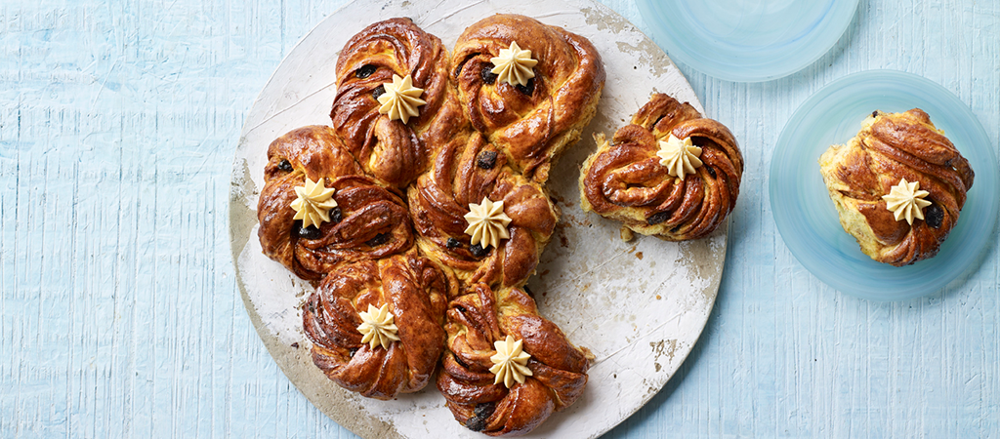

Here you can see some of the bakers' recipes and try them out yourself at home!
David's Cinnamon Swirls

Ingredients
For the dough:
500g strong white bread flour
30g light brown soft sugar
40g unsalted butter
1tsp salt
15g instant yeast
80g finely grated carrot
1tsp ground cardamom
Zest of 2 lemons
For the filling:
75g unsalted butter
75g light brown soft sugar
75g caster sugar
10g ground cinnamon
100g raisins
2tbsp brandy
For the glaze:
40g caster sugar
Half a tsp malt extract
1tsp ground cinnamon
For the buttercream:
75g unsalted butter
150g icing sugar
1tsp malt extract
1tsp vanilla paste
You will also need:
Large baking tray lined with baking paper
A medium piping bag with a small open star nozzle
An electric food mixer (not essential, but definitely helps)
Method
Place the yeast, 50g of the bread flour and 50ml of hand-hot water in a bowl. Mix to a paste and leave in a warm place or proving drawer for about 10 minutes, until doubled in size and full of bubbles.
Place the remaining flour, along with the sugar, salt, carrot, cardamom and lemon zest and 230ml of hand-hot water in a stand mixer fitted with the dough hook. Add the risen yeast mixture and mix for 5 minutes to a soft and slightly sticky dough. Cover the bowl with cling film and leave the dough to rest for 30 minutes in a warm pace or proving drawer.
Add the softened butter to the dough and knead until smooth. Leave covered with oiled cling film in the warm place or proving drawer for a further 20 minutes, until well risen.
Meanwhile, prepare the filling ingredients. Melt the butter in a small pan and set aside. Mix the two sugars in a bowl with the cinnamon and set aside. Soak the raisins in the brandy.
Tip the dough onto a work surface and knead lightly, then divide it into 4 equal portions. Take one portion and roll it into a long rectangle (about 40 x 20cm). Spread it with one quarter of the melted butter, sprinkle with one quarter of the sugar and scatter over one quarter of the soaked raisins. With a long side closest to you, roll it up tightly away from your body and set aside. Repeat with the remaining 3 portions of dough.
Take the first roll and slice it lengthways down the centre using a sharp knife or lightly greased scissors. Take one half and fold it down itself lengthways and then twist the two sides together. Now twist this into a circle and place it on the lined baking tray. Repeat with the other half and then repeat the whole slicing, folding and twisting process for the other 3 rolls. You should have 8 twisted rolls all together.
Heat the oven to 220°C/200°C fan/Gas 7. Place the tray inside a large plastic bag, ensuring the twisted rolls don’t touch the bag. Leave to prove for about 20 minutes, until doubled in size.
Remove the tray from the bag and transfer it to the oven. Bake the twists for 17–20 minutes, or until golden brown. Allow to cool for 10 minutes, then slide the rolls onto a wire rack to cool to cool completely.
While the twists are baking, make the glaze. Put the sugar, malt extract and cinnamon, along with 2 tablespoons of water, into a small pan over a medium heat and bring to the boil. Lower the temperature so that the mixture bubbles gently for about 6–8 minutes, until reduced to a light syrup. Brush the syrup over the hot twists when they come out of the oven.
While the twists are cooling, make the buttercream. Beat the butter with a wooden spoon until light and pale. Add the icing sugar and continue to beat, then finally add the malt extract and vanilla paste and beat until fully combined. Spoon into the piping bag and set aside until the twists are cool. Pipe a buttercream kiss on top of each twist to finish.